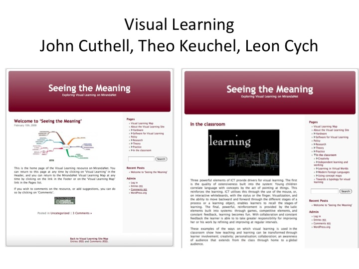

{kind=link}
Summary
iCatalyst is a bespoke, personalised professional development programme that focuses on strategies that support the leadership and the management of change. In the programme leaders of the schools or school clusters are involved in the design and delivery of effective professional development. In the first place they work with iCatalyst consultants to identify what they want to gain from their investment in digital technologies in terms of evidence of learning. The leaders will then be involved in the collaborative development of an action research programme to collect evidence of learning in the classroom working with their colleagues. The outcomes will include: accreditation for the leaders of the programme; professional development for all the staff involved; local evidence of improved learning and other benefits to use in reports for Pupil Premium and Ofsted; case studies and articles for school publications; provides compelling evidence on which to base changes in practice; embeds knowledge about effective professional development as well as programme designers; global publication of the teachers’ and the pupils’ achievements. Inclusions in research reports published globally; about enriching classroom practice.
The programme
Since 1992 MirandaNet Fellows have been refining this strategic professional development programme where the professionals who participate identify the challenges they face and work collaboratively to find solutions. On this journey as co-researchers the participants build a professional community in order to amass the evidence they need to underpin the changes they want to make. In publishing their case studies on the MirandaNet website they reach out to other professionals who are making a similar journey in their workplace.
This change management programme could be applied in a range of contexts and engage the whole workforce or just selected professionals like the potential community leaders. This way of working is particularly valuable in helping a group of professionals to reflect on changes that they wish to make to their policies and working practices and agree on how to implement the changes in order that they become embedded.
The iCatalyst process differs from most traditional courses that finish with a writing task that is rarely shared with the other learners in the group. In an iCatalyst programme a community is developed where all the members assist each other in using the knowledge they have gained to improve their policies and work practices collaboratively.
The programme is based on a large and varied body of research that MirandaNet Fellows have undertaken into the best ways to improve the motivation and retention of the workforce.
The collaborative approach to learning
The programme is designed to achieve consensus amongst the participants about what needs to be changed, and more importantly, why and how. In this context participants in iCatalyst are often asked to draw individual and collaborative maps about their progress through the programme rather than write an essay. This map creation often results in more honesty about the challenges of professional learning and the emotional impact of embedding change that the iCatalyst programme aims to acknowledge.
{kind=link}
Above is one participant’s view at the beginning of the professional journey she has embarked on. She compares the current resources available to her as a teacher with the challenge ahead of introducing digital learning and considers what the impact will be.
This learning progress map was developed in the early stages of an iCatalyst programme funded by Inspiration, a digital concept mapping package. The use of this package underpinned the changes early on in the ways that participants are now asked to communicate their experiences. Videos, webinars and conference presentations are actively encouraged as important visual methods of recording and sharing knowledge as well as the more conventional case study.
iCatalyst in South Africa, India and England
The following three examples of iCatalyst in action can be studied order to consider what kind of bespoke change programme might be appropriate. Single schools, clusters and regions have benefited from the learning process, sometimes self funding and sometimes funded by governments and companies. The programme has been run in China, India, Mexico and South Africa as well as England.
The following detail about three exemplar project that follows aims to cover:
- The challenges for the funders and the participants
- How the iCatalyst process helped to define the issues and create the solution
- The methods used to collect evidence
- The results.
1. Elapa: Digital Technologies in South Africa
Building a learning community in Free State province: 2001-2004
The digital technologies advisory team in the Free State province government of South Africa approached MirandaNet to help them to build ICT capacity in the region. One of the three poorest provinces in the country, Free State had no natural resources and, as a result, planned to imitate the growth of India by offering a workforce skilled in digital technologies at economic rates.
To fulfill this aim Free State wanted help in developing a cross phase ICT professional development programme that could be adapted by the advisory team to the very different contexts and education levels that were to be found in the education institutions. Twelve schools in different contexts were chosen by the government to pair up with Twelve MirandaNet schools in England because at the core of the programme was professional exchange. The choice of educational establishments was made to ensure that the diversity of this new Rainbow nation was represented and that groups that had not worked together in the past now had this opportunity. A key issue was the diversity in the teacher training that had been available to the different groups in the past. Distance between all the schools involved was a problem and as a result an online environment was set up by the Free State government that was entered on the MirandaNet website – very new technology at that time.
The professional learning community chose eLapa as their name because the Lapa is a place where African tribes meet to discuss important issues. As part of the symbol they designed they chose an upside-down bird: birds were reputed to fly upside-down over Free State because ‘there was nothing to see’. The iCatalyst participants aimed to change this perception of their region through this project.
{kind=link}
{kind=link}
At the start of the project participants provided a range of insights into how and why they might develop the capacity to embed learning tools in their teaching. Since this was a new political era for the Rainbow nation their observations indicate a new energy to move forward:
- We shall not cope with all the changes and the needs of a new generation if we do not keep up with all the ICT developments.
- I think at the moment there is too much focus on ICT skills rather than striking a balance on how ICT can help to facilitate learning and teaching. We can change this.
- All the necessary stakeholders (teachers, leaders, government administrators) must be actively involved in the making of the programme successful.
- I want to learn how to integrate ICT into lessons.
- The outside world is more and more changing their uses of ICT, so our children cannot stay behind.
- For me, I want training in using all the equipment and the programs so that as a teacher I will be well-prepared and in control. It will also help if there’s a person that can assist (mentor) you until you know exactly how everything is working.
- The main role of email will allow sharing of information on teaching and learning.
- The reality on the ground is that there are generally no facilities available for email and internet in rural areas – putting this first before we start the project has been good planning.
The key outcomes of the first stage were planned to be:
- Piloting resources
- Developing ICT CPD programme
- Raising sustainable funding
A presentation records the key points of the first phase consultation and exchange visits that you can download here.
Results from the first phase
One of the drivers for the project was to share an understanding of what was possible for Free State in a new political era. For many of the participants English was not their first language and as a result mapping their reactions at the beginning and end of the first phase was popular. They shared their maps and considered the implications of what they had learnt. Fanie had only just received her computer when the project started but her map traces remarkable progress by the end of the first stage.
{kind=link}
{kind=link}
In terms of results potential resources were created and tested by the eLapa community and an iCatalyst programme was developed from the pilot ready for the community leaders to work with more teachers from the other two thousand plus education institutions.
In the opinion of the twelve Fellows who went out to South Africa they learnt as much as the teachers and pupils who came to England in the pursuit of an effective professional development programme in using digitally enhanced learning tools.
At the end of the first stage, however, the Free State elections returns made an different political party, ANC, the new lead in the governent. As a result funding was not agreed by the new government for stage two and three, but many of the links between Fellows in Free State and England still remain.
2. ICT tools for future teachers
In the thirty years since digital learning tools were introduced into schools, government has been supportive of the UK industry that has produced some outstanding products to improve teaching and learning.
In 2009 Becta, the government agency for ICT, decided that they required research-based advice to support effective ICT use by teachers now and in the future. Christina Preston and Marilyn Leask, both members of the MirandaNet Fellowship, were asked to undertake this research that focused on five questions:
- What in the views of practitioners, are the characteristics of effective technology-based tools and resources and how do they help teachers do their work well?
- What are the characteristics of effective non-technology based tools and resources and how to they help teachers do their work well?
- Where do practitioners go to find out about and access new tools for learning and teaching?
- What are the key challenges faced by practitioners in doing their job well?
- The future – what ICT tools would help? What digital solutions are needed? If these solutions do not exist, could they be created? What would their characteristics be, and how and when would they be used?
iCatalyst methods
Preston and Leask decided to use iCatalyst collaborative methods to ask expert practitioners to be co-researchers if they had experience of using these tools in the classroom.
Initially 45 teachers from the nine government regions with expertise as senior managers and as classroom teachers in primary, secondary, special educational needs and FE as well as in local authorities and universities were worked together in focus groups over two days.Those attending were selected following an invitation via professional networks for nominations. Selection was made to get a balance across school types and roles and the ICT work being undertaken in their schools or institutions. Working as co-researchers and using mind mapping techniques they provided very detailed responses to the research questions.
This collaborative process with the group is identified as second level analysis that is normally done by a researcher when they have collected all the data from interviews and questionnaires. This is the level at which the researcher aim to make sense of all the information, often on their own. In this case the expert group had shared all the basic data and were now analysing it collaboratively using a digital map.
{kind=link}
One of the six maps is shown above and another group’s larger map can be downloaded here.
The conversations in the focus groups were recorded additionally by a team member in each focus group. A grounded approach was then used to establish the key themes which provide the structure for the Supplementary Reports with data grouped progressively to create these themes as the work of the focus groups developed.
To counter potential bias in the findings from what was a largely expert group, the findings were then tested through group and individual interviews with another fourteen teachers nominated by six institutions from the primary, secondary and FE sectors. International experts in ICT in Education from the US and Australia were also asked to comment on the draft findings. Both groups asked to scrutinize and challenge the initial findings in the light of their experience. In addition, a review of discussions on popular online forums like mirandalink where ICT tools are discussed was undertaken to identify what issues were preoccupying the teachers who use these forums.
Findings and recommendations
The Becta Harnessing Technology Strategy (2008) expressed the expectation that schools would make use of the pedagogical benefits of ICT tools. This ICT tools research showed that there was indeed by 2011 a widespread awareness of ICT tools as used now in everyday life and understanding that ICT could enable teachers to do their jobs well as well as improve the functioning of the institution.
Although the report was published in 2011 the main findings and recommendations are still largely pertinent to education and industry today. For example, major barriers to improving the use of ICT tools and resources in school are: knowledge about the ways various technologies can be used to enhance teaching, learning and assessment is very patchy with deep knowledge scattered across the education system and therefore hard to access, and; there is huge variation in the quality and reliability of the technical infrastructure which teachers have to rely on to integrate ICT tools into daily practice.
The five major recommendations we made on the basis of expert pracitioner input are now valuable as a discussion agenda in iCatalyst programmes as there is no longer a national lead organization to promote a central view in the UK about effective policy and practice.
Detailed recommendations on curriculum, assessment practices, developing organisational and individual capacity, creating a national infrastructure to support sharing and change management strategies can be downloaded here.
3. Bohdi programme, India
The Podar charity who were expanding their schools into the rural areas of India, MirandaNet was invited to run a programme for forty principals who meet termly over two years from 2010-2012 to identify ways of improving teaching methods and sharing them with new staff.
{kind=link}
Firstly the staff celebrated what they were already doing well including their creative response to new ideas.
In considering how to move forward they decided that they needed support from MirandaNet Fellows to strengthen the peripatetic advisory team were to be the leaders of a community of practice.
{kind=link}
They called their community, Bohdi, the tree of knowledge, where principals and their staff could exchange policy and practice. A logo was designed and an environment was set up in Moodle where progress was stored.
{kind=link}
A collaborative digital road map was developed that was added to as new curriculum ideas were explored.
{kind=link}
There were key aspects of the English approach to digitally enhanced learning that Podar staff wanted to learn about. This information was provided by Fellows in visits, on the Moodle and in webinars. In particular there was significant interest in how digital tools might improve Visual Literacy. The MirandaNet resources, seeing the meaning, proved valuable here.
Results
{kind=link}
Building the Bodhi community is an important element in the drive to encourage good teachers from the cities to go to the rural areas for two years as part of their professional development. This was considered essential as many teachers in rural areas have in fact had not teacher training. In this way these successful teachers can lead iCatalyst action research projects in the rural areas, share their successes and feel less cut off than they might have done in the past.
In addition the online programme allowed support from the UK team to be constant. This was supplemented by exchange visits between English and Indian teachers and final presentations by the Podar principles in conference in Mumbai and at BETT. This sharing about their achievements in improving their teaching and pupils’ learning was vital in changing policy and practice in the key areas that were identified at the beginning of the project as well as other matters that arose during the programme. The Podar advisory team with occasional support from MirandaNet Fellows now manage the Bodhi community in a purpose-built platform designed by the the technical team.
But one MirandaNet strand continues beyond the project lifecycle because the teaching and learning is conducted in English. MirandaNet phonics experts have continued to work with the advisory team and two pilot schools forty schools in this project.
Two resources from the project are offered here:
a. Leading Schools in Policy and Practice
The programme for continuing professional development with Podar principals
A case study by one of the principals, Simran Kaur, about the exchange with a MirandaNet school in England. In her introduction she says:
“This report is based on the second stage of the iCatalyst programme that has been running. The new programmes for June 2011 are based on the observations on the differences in practice between Indian schools and on the observations of practice in England from the visits of the Advisory team visit to Cheam and Newham. Their visits to England and their thoughtful observations have helped clarify how best MirandaNet Fellows can develop practice in classrooms and leadership approached in the Podar organisation”.
You can download this study here.
b. As an example of the tools the participants developed to collect evidence here is presentation. This presentation for this staff explains an action research questionnaire he developed to underpin a project he ran in his school. This can be downloaded here.
3. ICT tools for future teachers
In the thirty years since digital learning tools were introduced into schools, government has been supportive of the UK industry that has produced some outstanding products to improve teaching and learning.
In 2009 Becta, the government agency for ICT, decided that they required research-based advice to support effective ICT use by teachers now and in the future. Christina Preston and Marilyn Leask, both members of the MirandaNet Fellowship, were asked to undertake this research that focused on five questions:
- What in the views of practitioners, are the characteristics of effective technology-based tools and resources and how do they help teachers do their work well?
- What are the characteristics of effective non-technology based tools and resources and how to they help teachers do their work well?
- Where do practitioners go to find out about and access new tools for learning and teaching?
- What are the key challenges faced by practitioners in doing their job well?
- The future – what ICT tools would help? What digital solutions are needed? If these solutions do not exist, could they be created? What would their characteristics be, and how and when would they be used?
iCatalyst methods
Preston and Leask decided to use iCatalyst collaborative methods to ask expert practitioners to be co-researchers if they had experience of using these tools in the classroom.
Initially 45 teachers from the nine government regions with expertise as senior managers and as classroom teachers in primary, secondary, special educational needs and FE as well as in local authorities and universities were worked together in focus groups over two days.Those attending were selected following an invitation via professional networks for nominations. Selection was made to get a balance across school types and roles and the ICT work being undertaken in their schools or institutions. Working as co-researchers and using mind mapping techniques they provided very detailed responses to the research questions.
This collaborative process with the group is identified as second level analysis that is normally done by a researcher when they have collected all the data from interviews and questionnaires. This is the level at which the researcher aim to make sense of all the information, often on their own. In this case the expert group had shared all the basic data and were now analysing it collaboratively using a digital map.
One of the six maps is shown above and another group’s larger map can be downloaded here.
The conversations in the focus groups were recorded additionally by a team member in each focus group. A grounded approach was then used to establish the key themes which provide the structure for the Supplementary Reports with data grouped progressively to create these themes as the work of the focus groups developed.
To counter potential bias in the findings from what was a largely expert group, the findings were then tested through group and individual interviews with another fourteen teachers nominated by six institutions from the primary, secondary and FE sectors. International experts in ICT in Education from the US and Australia were also asked to comment on the draft findings. Both groups asked to scrutinize and challenge the initial findings in the light of their experience. In addition, a review of discussions on popular online forums like mirandalink where ICT tools are discussed was undertaken to identify what issues were preoccupying the teachers who use these forums.
Findings and recommendations
The Becta Harnessing Technology Strategy (2008) expressed the expectation that schools would make use of the pedagogical benefits of ICT tools. This ICT tools research showed that there was indeed by 2011 a widespread awareness of ICT tools as used now in everyday life and understanding that ICT could enable teachers to do their jobs well as well as improve the functioning of the institution.
Although the report was published in 2011 the main findings and recommendations are still largely pertinent to education and industry today. For example, major barriers to improving the use of ICT tools and resources in school are: knowledge about the ways various technologies can be used to enhance teaching, learning and assessment is very patchy with deep knowledge scattered across the education system and therefore hard to access, and; there is huge variation in the quality and reliability of the technical infrastructure which teachers have to rely on to integrate ICT tools into daily practice.
The five major recommendations we made on the basis of expert pracitioner input are now valuable as a discussion agenda in iCatalyst programmes as there is no longer a national lead organization to promote a central view in the UK about effective policy and practice.
Detailed recommendations on curriculum, assessment practices, developing organisational and individual capacity, creating a national infrastructure to support sharing and change management strategies can be downloaded here.
More information
You can read more about the iCatalyst programme here
MirandaNet case studies are here.
Related MirandaNet research publications can be accessed from the Publications pages.
Contact
MirandaNet consultants are always ready to work with schools, governments, companies and charities on their professional development requirements.
Contact enquiries@mirandanet.ac.uk for details.